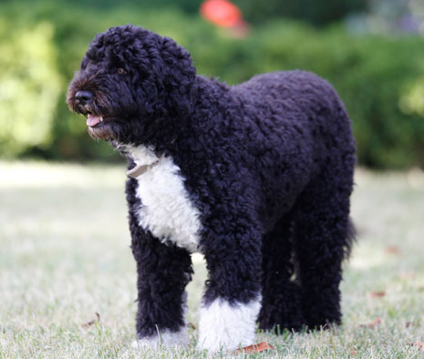

Portugese Water Dog
Preferred by people with allergies because of it's allergenic coat
- Scientific Name: Canis lupus familiaris
- Average Length: 17 - 23 inches
- Average Lifespan: 10 to 14 years/li>
- Habitat: Item #4
The Portugese water dog is a breed of dogs that was used by fishermen along Portugal’s coastline for centuries to retrieve broken nets, herd schools of fish, and even deliver messages between boats and the shore. It has dark eyes and heart-shaped ears. It's tail curves into a ring when it is at attention and is preferred by people with allergies because of it's hypoallergenic coat.